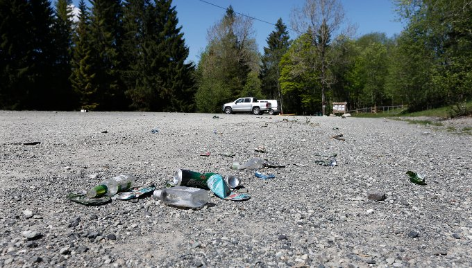

Stortinget lager ny lov

Dette var oppdraget
Da han snudde seg, tenkte jeg "Han skal bli min"

Vil ha et asker uten forsøpling
Stabæk mistet to poeng på forsvarstabbe
Bilde 6
Litensak 5
Bilde 7
Storsak